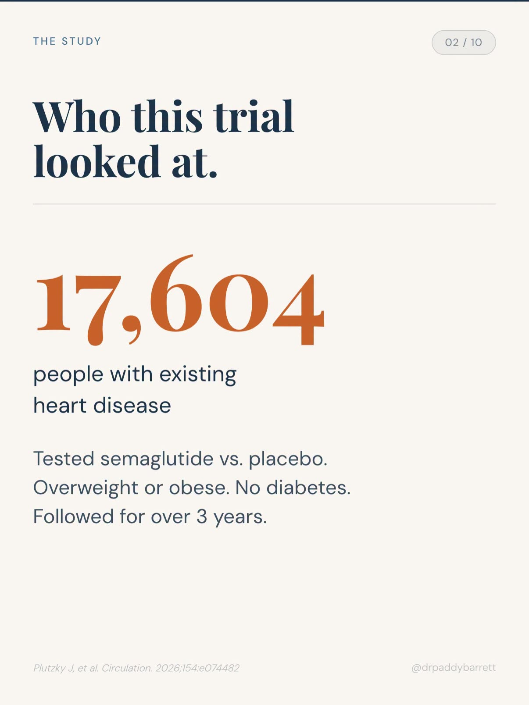
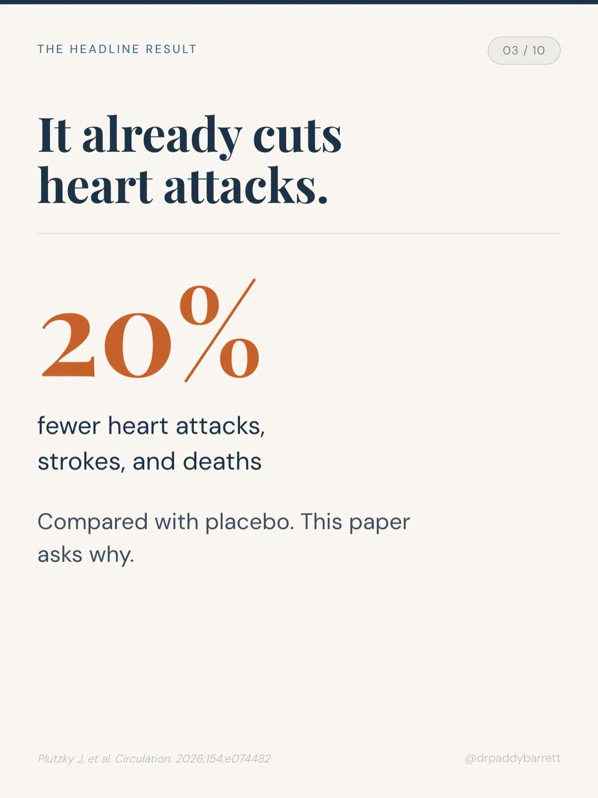
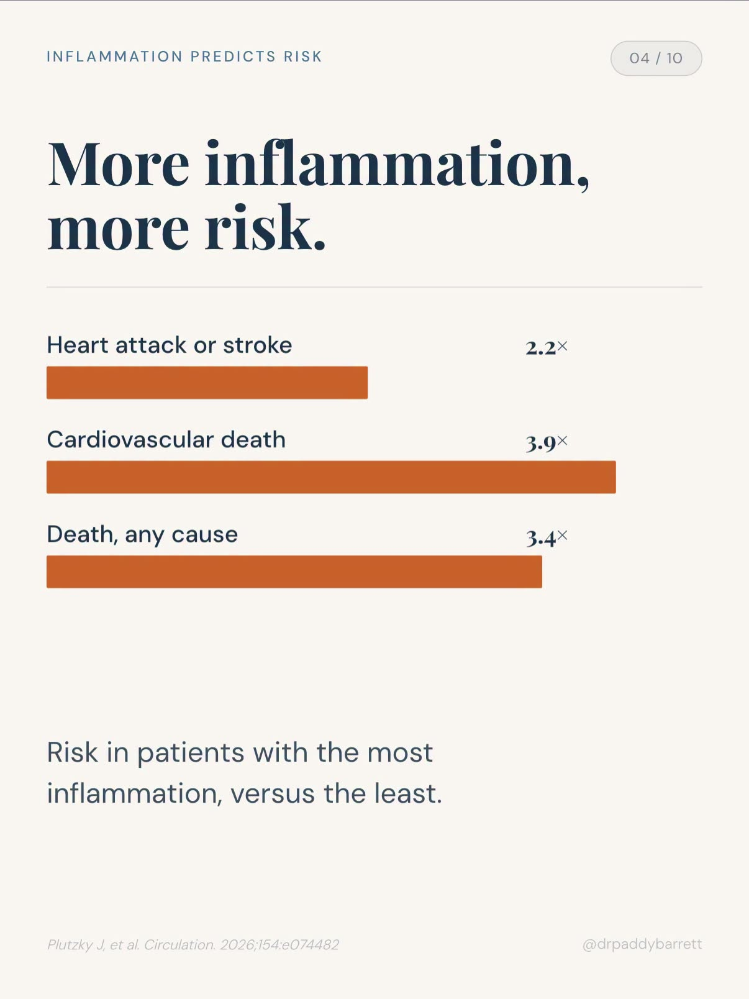
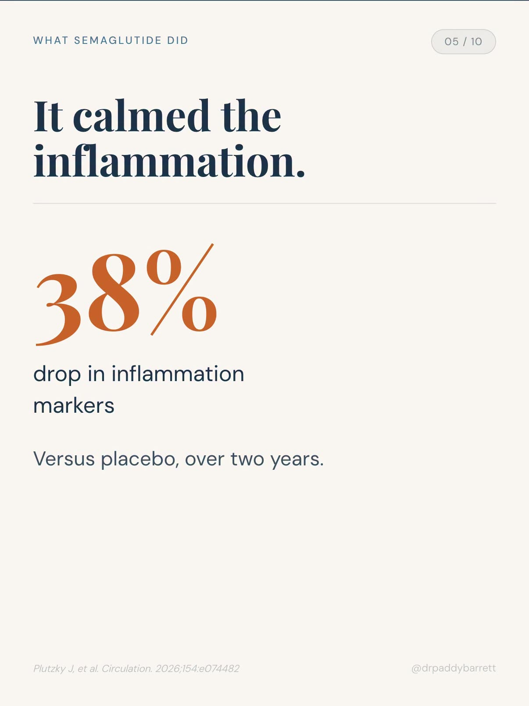

In the huge SELECT randomized trial, the GLP1 agonist Semaglutide cut inflammation markers by 38% versus placebo. Much of the drop occurred even before weight loss was seen. The patients who saw the largest drops in inflammation on Semaglutide had the fewest heart attacks and other cardiovascular events in the trial.
#glp1HD #glp1inflammationHD #inflammationHD #semaglutideHD #selectHD
Inflammation is a major driver of heart disease. Weight loss medications significantly reduce it.
In SELECT, 17,604 people with existing heart disease and overweight or obesity were given semaglutide or a placebo. The trial already showed 20% fewer heart attacks, strokes, and cardiovascular deaths. This new analysis asks why.
People with the most inflammation had 2 to 4 times the risk of a heart attack, stroke, or death compared with those with the least. Semaglutide cut inflammation markers by 38% versus placebo and the drop came early, showing up before most of the weight loss did. It happened even in people who lost little to no weight, and separately from any change in cholesterol.
Patients whose inflammation fell the most also had fewer cardiovascular events. Modelling suggests a meaningful share of the drug’s benefit traces back to this drop in inflammation though this kind of analysis can show a link, not prove that lowering inflammation itself is what caused it.
Save this and share it with someone managing heart disease.
📄 Plutzky J, Bogdański P, Colhoun HM, et al. Effect of Semaglutide on the Inflammatory Biomarker High-Sensitivity CRP in Patients With Established Cardiovascular Disease and Overweight or Obesity in SELECT. Circulation. 2026;154:e074482.




